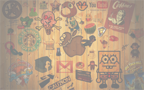

Работа такая-то
- 
Разработчики из Blizzard назвали Dolby Atmos «священным граалем» для игр. Компании сотрудничали для создания атмосферного звучания в игре Overwatch. Формат даёт возможность услышать не только горизонтальное направление звука, но и вертикальное, позволяет звукорежиссёрам работать одновременно с 128 звуковыми объектами, задавая их направление и занимаемый объём. В шутерах такое звуковое сопровождение даёт преимущества — оно позволяет точно определить, где находится соперник. Впервые Atmos представили в 2012 году. Мы публиковали на Geektimes интервью с генеральным директором и инженером по кинотехнологиям Dolby в России и СНГ, где рассказали о технологии для кинотеатров и мобильных устройств. Читайте эксклюзивное интервью о реализации Dolby Atmos в игре — шутере Overwatch от компании Blizzard Entertainment. jl; 1Впервые Atmos представили в 2012 году. Мы публиковали на Geektimes интервью с генеральным директором и инженером по кинотехнологиям Dolby в России и СНГ, где рассказали о технологии для кинотеатров и мобильных устройств. Читайте эксклюзивное интервью о реализации Dolby Atmos в игре — шутере Overwatch от компании Blizzard Entertainment. jl; 1Впервые Atmos представили в 2012 году. Мы публиковали на Geektimes интервью с генеральным директором и инженером по кинотехнологиям Dolby в России и СНГ, где рассказали о технологии для кинотеатров и мобильных устройств. Читайте эксклюзивное интервью о реализации Dolby Atmos в игре — шутере Overwatch от компании Blizzard Entertainment. jl; 1Впервые Atmos представили в 2012 году. Мы публиковали на Geektimes интервью с генеральным директором и инженером по кинотехнологиям Dolby в России и СНГ, где рассказали о технологии для кинотеатров и мобильных устройств. Читайте эксклюзивное интервью о реализации Dolby Atmos в игре — шутере Overwatch от компании Blizzard Entertainment. jl; 1